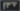

中文全文译文：由「译文工坊」根据英文原文自动翻译生成，供学习参考。结构与措辞以译文为准；想看原始论述，请点上方「阅读原文」。

Laura Fehre，Figma 设计布道师
从设计到代码的设计交付，不必是一条单行道。这套工作流展示了设计师如何将代码库连接到 Figma Make，直接进行修改，并让整个团队参与评审，一直到 PR（拉取请求）环节。
分享「工作流实验室：用 Figma Make 直接部署设计」
首屏插图由 Marine Buffard 创作
工作流概览：
Figma 产品：Figma Design、Figma Make
工具：Figma 智能体、GitHub 集成、基于生产代码的 Make、标注
团队：设计师、工程师和产品经理
要解决的问题：如果让网站更具包容性的那些小修复，不必再在待办列表里排队等待，会怎样？
欢迎来到 Workflow Lab，我们将在这里使用 Figma 产品和工具，呈现一个示例工作流Workflow Lab：借助 Figma MCP（模型上下文协议）扩展画布团队开发越快，设计与代码就越容易同样迅速地脱节。这个工作流展示了如何弥合这道鸿沟：把真实的产品状态带到画布上，让设计师能够塑造最终发布的内容。。
传统上，从“我注意到一个小问题”到“它发布了”，中间要经过一张工单。设计师把问题写清楚，它进入待办列表，随后被工程团队已经承诺的所有事项淹没。对于细小而精细的修复，这个队列就是良好意愿的坟场：这类工作太琐碎，排不上优先级，又太重要，不能放弃，只好一直拖着。
还有第二重代价。设计师交付的是一段书面描述，细微之处就会丢失。“把间距收紧一点”或“屏幕阅读器这里读错了”，会变成一轮又一轮的截图和澄清，工程师则成了设计决策的“翻译”，而这些决策本可以由设计师直接做出。但如果这个工作流还有另一种解法呢？
问题
以虚构的博物馆 Museum of Speculative Futures（MOSF）为示例，这家博物馆探索文化如何想象未来。他们正在改进网站的可访问性，同时对整体架构进行重写。优先级相互冲突，这个项目的资源配置成了一大难题。设计师想弥补可访问性方面的缺口，而工程师则需要埋头完成同样重要的重写工作。为了兼顾两个目标，PM 提出了另一条路径：繁重的工作仍由工程师负责，而设计师借助在生产代码上使用 Figma MakeFigma Make 现已支持本地代码从可视化编辑到上下文提示词设计与协作，Figma Make 正在拓展团队用代码进行设计的方式。，端到端地负责那些工作量小、注重工艺的改动。最后那 20% 恰恰是区分“技术上能用”的网站与真正可访问的网站的关键，因此团队对这个方案达成了一致。请跟随设计师扭转局面，把工作从画布带到评审，再到合并拉取请求，全程无需提交一张工单。


在画布上收集反馈
拉远视角
合成用户画像无法取代真实的用户研究，但能尽早暴露明显的摩擦点，让面对面的访谈得以挖得更深。
在动手修改之前，设计师想先对现有体验做一次压力测试。他们在 Figma Design 中使用the agentFigma’s design agent, now with custom tools and greater contextPrompting gets you started. Custom tools, real context, and skills take the design agent further—so what ends up on the canvas actually looks like you. 生成一组合成用户画像——计划行程的首次访客、回访的会员、使用屏幕阅读器浏览的用户——并让每个画像浏览网站，以收集反馈。
反馈很具体，而且大多是小问题：展览页面上含义容易混淆的标签、容易被忽略的行动号召、一眼难以看懂的日期选择器，以及藏品搜索无结果时停在空白屏幕的死胡同。这些改动都不大，但合在一起，就能让网站更易用。
Figma 智能体生成的三个合成用户画像在画布上浏览 MOSF 网站，并留下一份反馈报告。
设计师处理完这些反馈后，把设计改动带回团队做一次直觉检验。设计师、工程师和 PM 一起逐项过一遍：参观页面上更清晰的标签、更醒目的行动号召，以及更友好的日期选择器。大家一致认为，这些改动服务于共同的目标——无论用户以何种方式使用网络，都能顺畅浏览并乐在其中的网站。
直接上手代码，跳过待办积压
拉远视角
设计交付被颠倒过来。不再是设计师描述改动、由工程师来实现，而是设计师自己动手实现，工程师负责评审。这与通常的方向相反，工程师的判断体现在评审环节，而不是实现环节。
双方商定的改动都很小，而且大家理解一致。设计师没有写工单再等待，而是请工程师授予代码库的访问权限——不是要接手重写，而是直接处理这几处具体的修复。
工程师授予了权限，设计师将项目的 GitHub repositoryFigma Make, now on your local codeFrom visual editing to contextual prompting and collaboration, Figma Make is expanding how teams can design with code. 连接到 Make。生产环境的代码库现在已在 Figma 中就绪，设计师基于当前站点创建了一个新分支，从清单上看起来最简单的修复入手：展览页面的日期选择器，Figma 智能体的用户画像认为它很难看懂。
Figma Make 已连接到 MOSF 代码库，正在应用中逐页浏览，来到预订页面的日历日期选择器。
在静态设计稿中，这只是五分钟的改动。但直接基于代码工作时，Make 呈现出了画布看不到的信息：这个日期选择器并非孤例，而是一个共享组件——活动日历和会员注册流程里用的是同一个。看似单点的小调整，实际上需要同时在三个地方修改。
拉远视角
工单上可能只写着“修复展览页面的日期选择器”——一个页面，一处修复。但日期选择器其实是一个在三处渲染的共享组件，即使工单没有说明，代码也清楚这一点。
基于工单的工作流可能只会修复展览页面的日期选择器，让活动日历和会员流程继续沿用旧版本——这种不一致很晚才会有人注意到，甚至永远没人发现。而设计师身处代码之中，这个共享依赖现在就一目了然，修复只需在正确的位置做一次。
完成之后，设计师继续处理清单上的其余事项：更清晰的标签、更醒目的行动号召、更友好的空状态。每一项单独看都不起眼，但合在一起，就能让一个“只是能用”的网站变成一个“用心打磨过”的网站——这正是通常永远走不出待办清单的最后 20%。
与整个团队一起评审
拉远视角
日期选择器的屏幕阅读器体验与它在屏幕上的外观在同一次评审中确定，可访问性与设计同步成形，而不是事后补救。
修改就位后，设计师将成果发给团队做最终评审。可访问性目标正是在这一步变得具体。看得见的修复已经完成，现在团队要标注每一处在辅助技术下应如何工作，并且就标注在对应位置。内容包括：共享日期选择器应朗读的 aria-label，让它不仅看得清，也听得懂；与屏幕上显示内容一致的屏幕阅读器标签；能够抵达行动号召而不是直接跳过它的焦点顺序；以及带有屏幕阅读器可播报文案的空状态，这样搜索无结果时就不会是一片沉默。
Figma Make 中已纳入团队评审意见的 MOSF 更新版本：可访问性标注中说明了日期选择器的 aria-label、展览日期的屏幕阅读器文本，以及导航栏。
PM 确认这一切仍然服务于可访问性目标，工程师就哪些内容应在代码中处理给出意见，设计师则加入最后的微调。
推送 PR（拉取请求）
最后的标注处理完毕后，设计师直接从 Make 向代码库推送拉取请求。工程师审查代码（此时更新后的设计意图、团队评论和可访问性标注都附在同一次改动上），批准并合并分支。那些原本要在待办列表里躺一个季度的修复，一天就发布了。
在从 Figma Make 向 GitHub 触发提交之前，先检查这些改动。
放眼全局
PR（拉取请求）不只记录改了什么，也记录了改动是如何发生的。
这种工作方式改动不大，回报却很长远。工单关闭后就消失了，藏在其中的决策也随之烟消云散。而合并后的改动会把它们保留下来：评论、可访问性标注，以及将日期选择器改为共享的推理过程。六个月后，当有人重新审视这个日期选择器时，通向今天的这条路径就留在团队的共享历史里。

通往生产环境之路：另一种设计交付
传统的设计交付模式把设计师和工程师当作流水线上的两个工位。对于大型、定义清晰的功能，这种方式行之有效。但更精细的收尾、可访问性改进，以及决定完整产品体验的打磨工作，需要另一种设计交付方式：设计师直接在代码中工作。
这种工作方式不要求设计师变成工程师，也不要求工程师变成设计师，而是让各方把判断力用在最关键之处设计到代码的循环解锁了什么随着工作在代码与画布之间更流畅地流转，工作流不只是在变化，而是在融合。：工程师继续专注于架构改造，设计师全程负责细节优化，PM 则确保整个项目始终朝着目标推进。这条分支承载了每个人的贡献：可见的设计、书面反馈，以及屏幕阅读器会朗读的标签，全部从画布一路进入已合并的 PR（拉取请求）。
有了这套工作流，最后那 20% 没有被砍掉，而是被发布了。
想了解更多如何将 Make 项目直接推送到 GitHub，请查看我们的帮助中心，或观看我们最新的 Config 演讲：在代码中设计，以及如何使用 Figma 设计智能体。
Laura 擅长折腾设计系统、材料，有时还折腾自己（经常是倒立着）。她喜欢说自己住在一块岩石下面，那是她远离喧嚣的创意避世之所。她的创作流程靠的是清晨遛狗、一个兼任心理咨询师的第二大脑，以及拒绝去做所有人都在做的东西。
相关文章
- Figma Make，现已支持你的本地代码Inside Figma产品更新Figma Make设计AI原型设计新闻
- 工作流实验室：用 Figma MCP 拓展画布Working WellFigma MCPAIFigma DesignDev Mode提示与灵感
- 工作流实验室：Figma 中的 AI 图像工具与交互式原型设计Working WellAIFigJamFigma DesignFigma Make原型设计提示与灵感
使用 Figma 创作与协作
免费开始使用
文章中的视频
- designing in codeYouTube
- Figma design agentYouTube